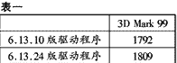
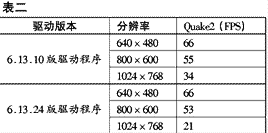

|
|
| 当前位置：电脑报电子版 > 1999 年 > 37 期 > 硬件周刊 > 显卡驱动程序使用窍门 |
| 《 显卡驱动程序使用窍门 》 |
| 我想不少朋友都明白显卡驱动程序的重要性，所以大伙都会不停地上网下载最新驱动程序。但在实际使用显卡驱动程序的时候，还有很多窍门。 首先，最新的并不一定是最好的。我举一个例子：Savage3D的驱动更新之频繁已经天下闻名，其实显示芯片本身还是很不错的，性能直逼TNT，而价格却便宜得多，如果使用恰当，其表现相当出色。我认为目前最好的Savage3D驱动是4.11.01.4005－6.13.10，而并非最新的4.11.01.4005－6.13.24。但是前者不带S3Tweak（S3专用的超频工具），这个问题很简单，只要先安装6.13.24版，再直接在显示属性中改装老版的驱动，S3Tweak仍旧会保留。我用3D Mark 99对两个版本的速度进行了测试，差别是微乎其微的(见表一)；而在Quake2的测试中，6.13.24版驱动在1024×768分辨率下没有可用性，由于莫名其妙地不停地读硬盘，使得游戏一顿一顿的，而在老版驱动程序下则非常流畅(见表二)。当然如果你不使用1024×768分辨率就不必在意新驱动程序的缺点。 （测试环境：赛扬400/64M内存/GVC BXII主板/ Savage3D MV(390) 8M(显示芯片为默认频率100MHz)。同样测试环境下，小影霸TNT 16M也没有突破2000大关，可以说Savage3D是现在最价廉物美的显卡了，有些品牌的Savage3D售价甚至低于300元。） 其次，公板驱动程序往往最好，也是最新的。一般说来，显示芯片厂商先发布一个新的驱动程序，然后各显卡厂商才跟上。我们常常会发现一个新游戏在某著名品牌显卡上玩不起来，而且该品牌公司的网站上又还没有新的驱动程序，这时候装个最新的公板驱动程序通常就解决问题了。那么在速度上呢，公板驱动程序有没有优势？应该说许多时候，公板的驱动程序比品牌自制的驱动程序更快。这也好理解，公板驱动是芯片厂商自己开发的，他们总比别人更了解自己的芯片吧。 不过现在我发现芯片厂商开发公板驱动有一个不良的倾向：他们会尽量在速度上优化，但却以牺牲画质为代价。这可能是因为不同3D芯片竞争太激烈的缘故吧。从前只有nVidia的Riva128这么做，现在似乎3Dfx也领悟到了这么做的妙处。Voodoo系列素以画质出众著称，但如今在Voodoo3上这一优势已经不复存在，很明显3Dfx是为了在速度上与TNT2拉近距离。nVidia依然如故，在以前的TNT2驱动程序中，曾经出现过一个“软件抗锯齿”功能，可以很好地改善画质，但对速度影响很大，如今已被淡化了。令人感叹的是TNT2的画质已经超越Voodoo3，想起两年前的第2代显卡之争，仿佛是一种讽刺。还记得以前S3刚出Virge芯片时，几乎没什么3D效果，但后来的驱动竟然可以提高3D速度2倍，增加3D特效20多个，让人惊讶不已。我想S3收购Diamond的原因之一可能是看中了Diamond强劲的显卡驱动研发能力。说到这儿告诉大家一个秘密：如果你购买了Savage4，赶快去Diamond网站下载一个Diamond S540Ⅲ的驱动程序，保证让你又爽又快。 再次，超频工具在某种意义上已成了驱动程序的一部分。因此不同显示芯片最好配专用的超频工具。比如Voodoo3的OverClocker、TNT2的TNT2 CLK、Savage4的S3 Tweak、G400的Tweak。像S3 Tweak已经得到S3公司的认可，包含在新版的驱动程序中，这样做的最大好处是稳定。通用超频工具建议使用Powerstrip，我使用的是2.51.07版，已经支持中文，非常好用，只要在进阶选项中，选择执行效能调整，就能改变显存和芯片的频率了，不过有的芯片并不支持超频。提醒各位，超频别贪得无厌。 最后，安装驱动程序时，请注意是否安装了主板补丁。现在无论是哪种芯片组，都必须先装其补丁，在Win95中还要装USB升级程序，这样你的AGP显卡才能跑得欢。如果你的系统中曾装过其他种类的显卡，则最好先把它的驱动程序删除，否则可能给新卡安装与使用带来麻烦。删除时不可在正常模式下进行，应进入安全模式，在控制面板的系统（显示适配器）中删掉所有不需要的驱动程序。另外需注意的是不要重复安装驱动程序。有的朋友更改新驱动程序时，在添加新硬件中进行，这样可能导致显示适配器中出现两个设备，极易死机，最好的升级方法是在显示属性中依次点选设置、高级、适配器、更改，这种方法比在控制面板的系统中升级更好、更安全。 （江苏 无踪） |
| 下载本期推荐软件 | 页 首 |
| 《电脑报》版权所有，电脑报网站编辑部设计制作发布 |